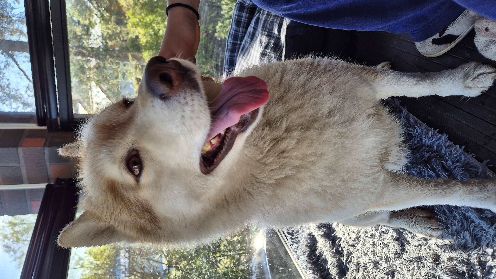

Hi My name is Ji. My favorite animal is a dog, especially primitive dog breeds. Dogs are funny and friendly animals. They can be great companions and are fun to play with. I have a Siberian Husky whose name is Noa. I love taking him out for a walk every morning
Click here to learn more about Siberian Huskies